이 글은 Typescript + TSLint + Mocha + Chai + ts-node + NYC로 모던한 프론트 엔드 테스트 환경 구축하기,
rollup.js를 통해 모듈 번들링하기에서 이어지는 내용이며,
여러 주제를 다루다보니 깊게 다루지는 않고 각각이 무엇을 하는 것인지만 간단하게 설명과 예제를 곁들여 진행하고 있습니다.
또한 예제 진행은 IntelliJ를 통해 진행했습니다.
WebStorm으로 진행해도 상관 없고, VS Code와 진행하면 더 짱짱맨일지도 모르겠습니다.
각 단계 별 깃헙 저장소 브랜치를 제공하고 있고, 이 포스트의 최종 결과물은 front-test-setting 저장소에서 확인 가능합니다.
CI(Continuous Integration)
지속적인 통합이라고 직역이 되는데 그냥 뭔소린지 모르겠으니 영어의 느낌을 그대로 갖고 있는 게 좋은 것 같다.
CI는 빌드, 테스트, 배포 등등의 잡다구레한 일을 자동화 해주는 도구 정도로 알고 있다.
우리는 여기서 빌드와 테스트만 자동화 해볼 예정이다.
Travis CI
유사품으로 젠킨스라는 게 있는데 이거는 별도의 CI 서버를 구축해야해서 사내에서 많이 쓰고,
Travis CI를 사용하면 별도의 서버를 구축하지 않고 바로 사용이 가능하기 때문에 오픈소스 진영에서 많이 사용한다.
그럼 이 CI를 왜 써야할까…?
- 일단 내가 테스트 코드 매번 돌리기 귀찮음…(푸시하면 알아서 Travis CI가 돌고 결과를 알려줌.)
- 풀리퀘스트 받을 때 남이 내 코드를 어떤 식으로 깔아뭉갰을지 모르므로 테스트가 통과됐으면 내 코드에 대한 안전성도 보장됨.
여러가지 이유가 있겠지만 나는 주로 위 이유 때문에 Travis CI를 사용했다.
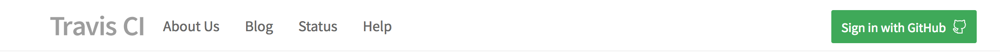
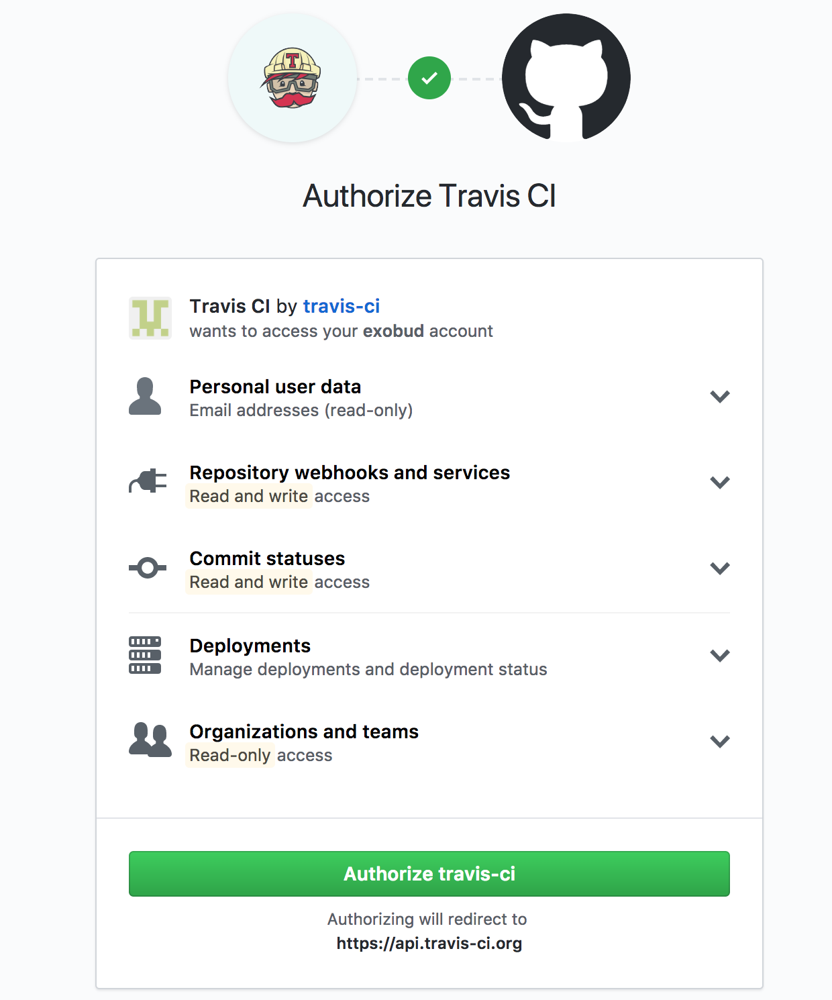
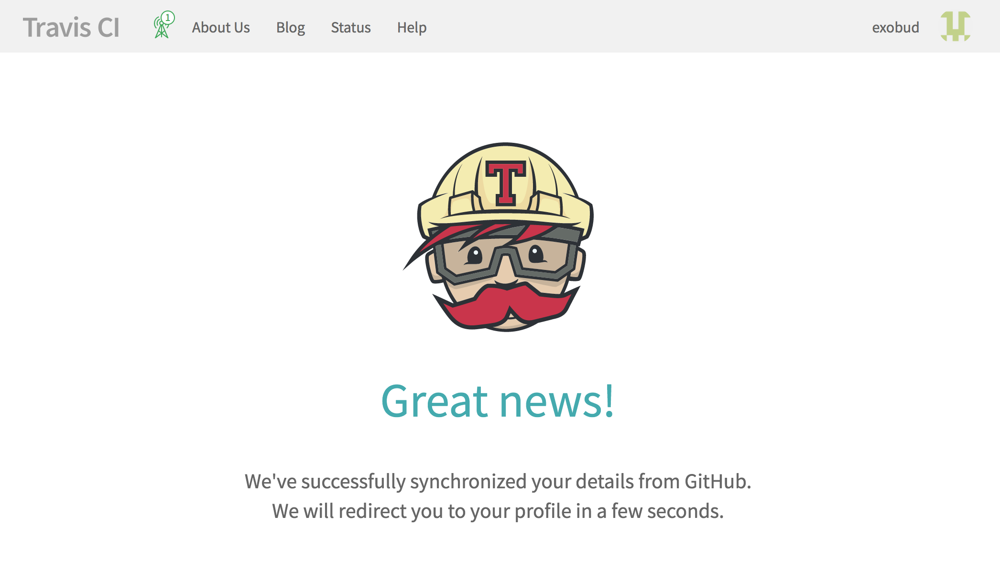
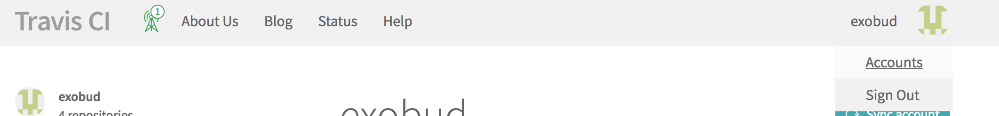
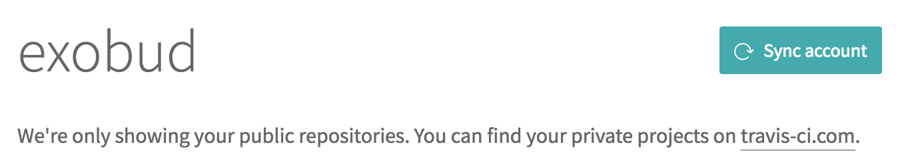
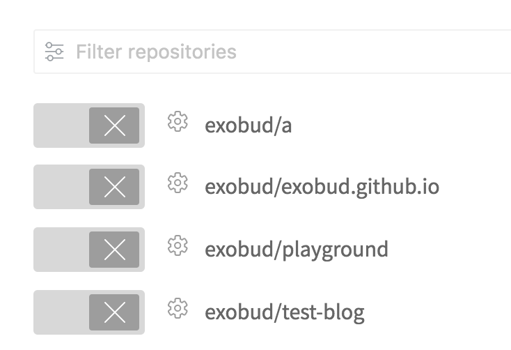
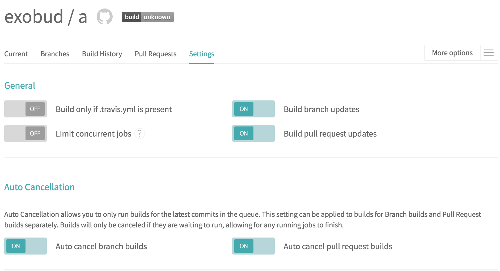
그리고 travis ci에 대한 설정 파일도 만들어줘야한다.
우선 우리의 코드는 자바스크립트이기 때문에 Node.js 위에서 돌리면 된다.
.travis.yml 파일을 만들고 아래와 같이 설정해주면 된다.1
2
3
4language: node_js
node_js:
- "node"
- "lts/*"
각 버전에 대한 자세한 설명은 Specifying-Node.js-versions을 참고하면 된다.
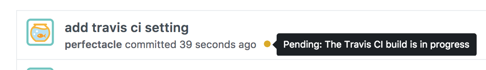
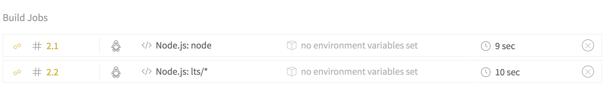
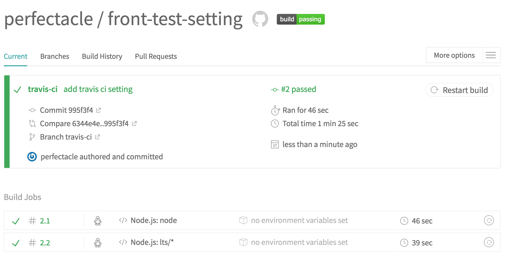
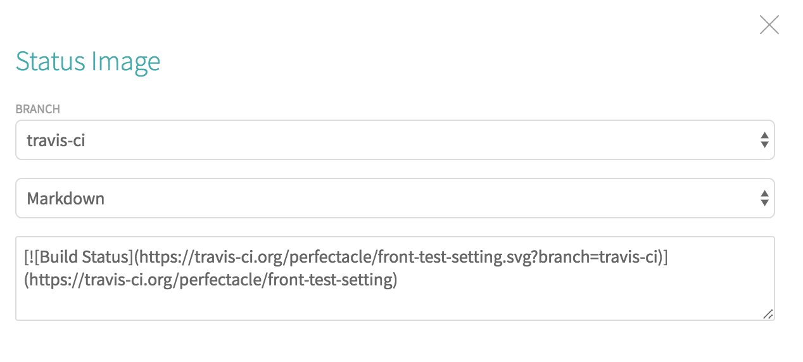
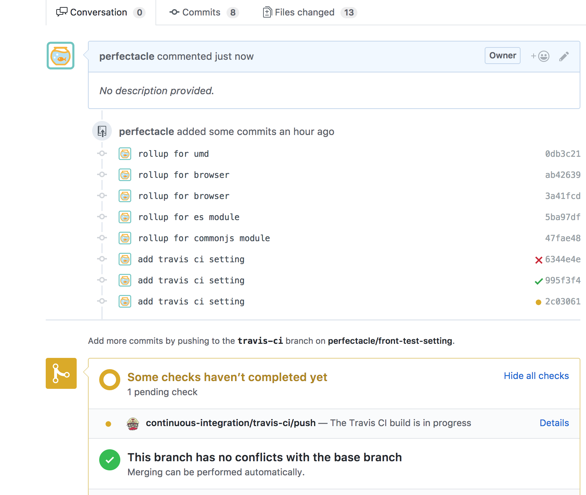
따라서 빌드가 성공하지 않은 풀리퀘는 적어도 확인해 볼 것도 없이 반려하면 되는 풀리퀘가 되는 것이다.
(가끔 노드 버전에 따라 xx 맞게 설치도 실패하는 경우도 많아서 100% 신뢰할 만한 건 아니다.)
Coveralls
NYC(Istanbul)은 로컬에서 테스트 커버리지를 측정하는 도구였다.
Coveralls는 깃헙 저장소와 연계해서 NYC로 측정한 테스트 커버리지를 알려준다.
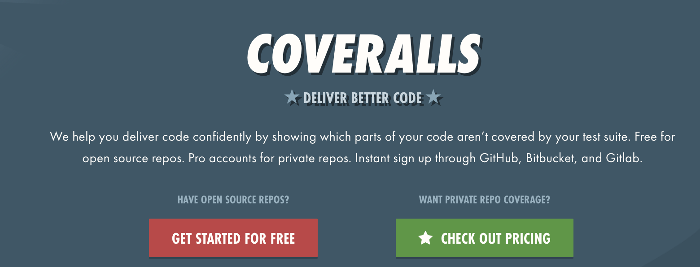
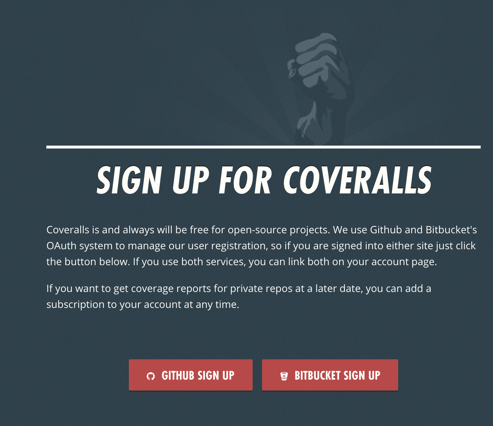
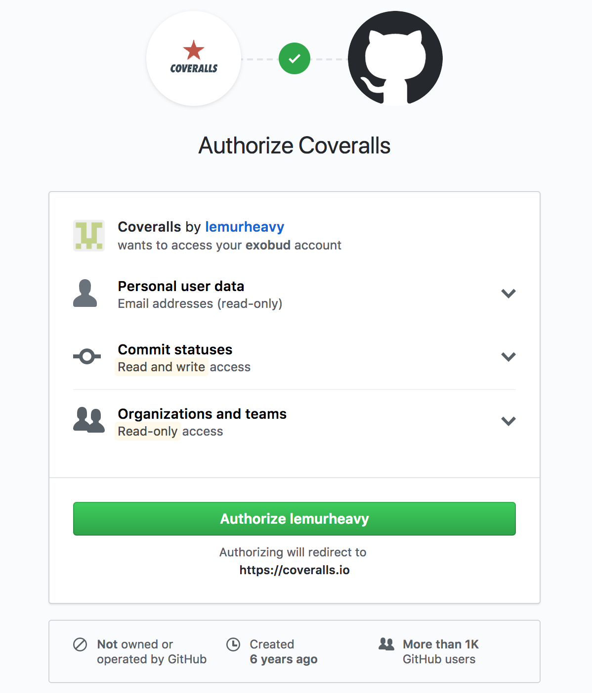
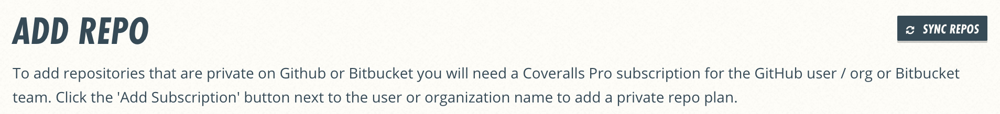
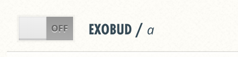
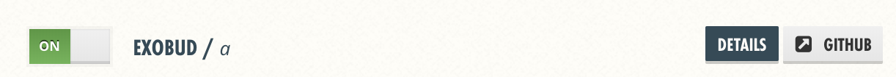
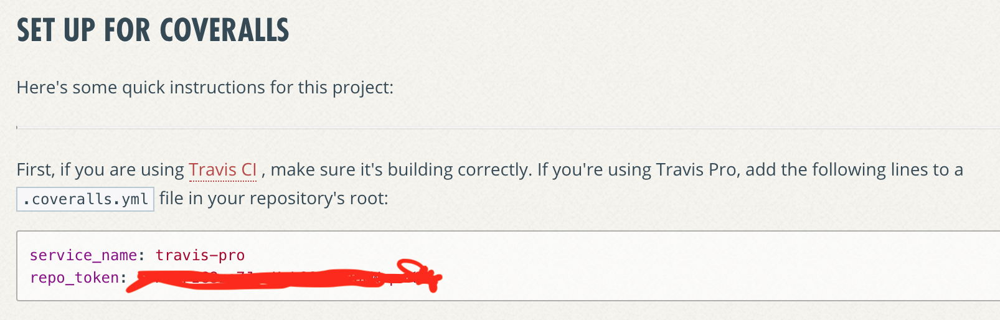
우리 저장소는 public이라 해당 설정을 할 필요가 없지만 로컬에서 테스트 커버리지에 대한 결과도 coveralls로 전송하려면 위 과정을 진행해야한다.
그리고 repo_token의 경우에는 저장소에 접근 가능한 토큰이므로 절대 외부로 공개해서는 안 된다.
우선 coveralls를 설치하자.1
npm i -S coveralls
그리고 프로젝트 디렉토리에 .coveralls.yml 파일을 만들자.1
touch .coveralls.yml
1 | service_name: travis-pro |
해당 파일은 토큰을 가지고 있기 때문에 어디에도 공개해서는 안 되는 정보기 때문에 꼭 .gitignore에 등록해두자.
그리고 nyc의 테스트 커버리지의 정보를 전송하기 위해 package.json에 coveralls 스크립트를 추가하자.
1 | { |
npm test를 때리고 npm run coveralls를 때리고 나면 coveralls로 해당 테스트 커버리지 정보가 전송된다.
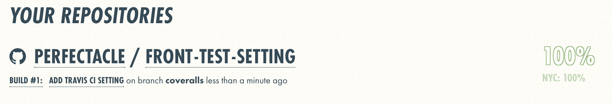
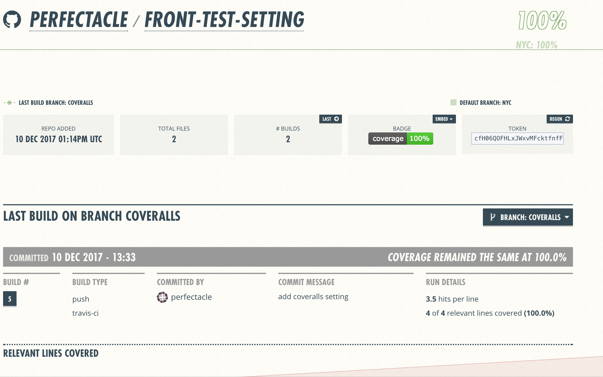
이제 Travis CI와 Coveralls를 연계해 볼 차례이다.
설정은 간단하게 .travis.yml에 아래 코드만 추가해주면 된다.1
2after_success:
- npm run coveralls
빌드가 성공하면 테스트 커버리지를 coveralls로 전송하는 스크립트만 추가하면 된다.
이제 푸시/풀리퀘를 날려도 coveralls가 자동으로 테스트 커버리지를 측정한다.
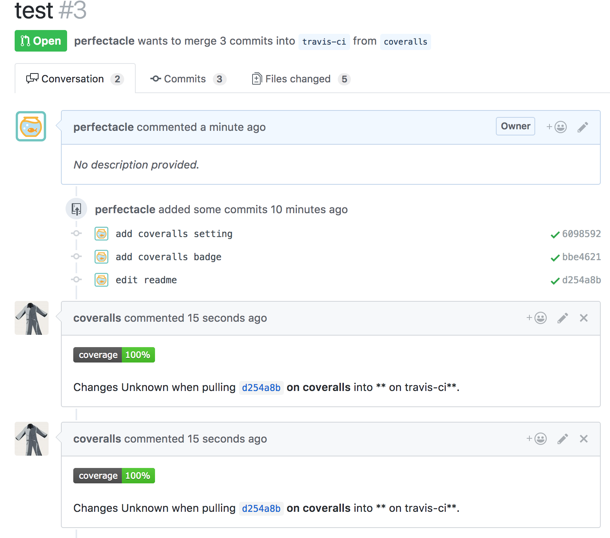
마치며
Typescript, TSLint, Mocha, Chai, ts-node, nyc, rollup, Travis CI, Coveralls 등 다양한 주제를 다루려다보니
포스팅 시간도 길었고 내용도 루즈해졌고, 깊이도 거의 없다 싶이 해서 아쉽긴 한 포스트입니다.
하지만 뭔가 이제 오픈소스나 작업 환경을 좀 더 간지나게 세팅할 수 있다는 것에 뿌듯하긴 한데…
이런 게 설레발 주도 개발인가 싶기도 하네요… ㅎㅎ